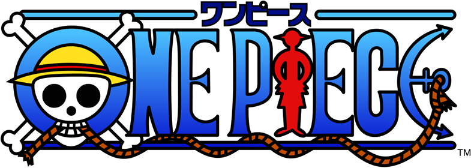
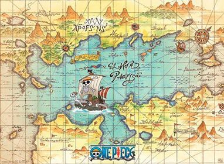

 Histoire de One Piece
Apprenez-en un peu plus sur l'oeuvre d'Eiichiro Oda !

One Piece est un shônen, se déroulant dans un univers fictif, dominé par les océans, sous l'ère de la piraterie. A sa mort, le roi des pirates, Gold Roger, a laissé un trésor permettant à celui qui le trouve de devenir à son tour le Seigneur des Pirates. Nous suivons ici Monkey D Luffy, un homme ayant mangé le Gomu Gomu no Mi, un fruit du démon lui permettant de devenir un homme élastique, à défaut de pouvoir nager. Tout comme énormément de personnes, Luffy a pour objectif de devenir le Roi des Pirates.
Dans cette quête, il fera la rencontre de plusieurs personnes partageant aussi une grande ambition, qui deviendront les membres de son équipage. Ainsi, d'aventures en aventures, son périple deviendra très compliqué puisqu'il partira sur une mer connue pour être dangereuse, Grand Line (connu aussi sous le nom de Route de tous les périples).
Vous pouvez en parler avec la communauté via la page suivante : Discussions
08/06/2020 11:58 - Karis